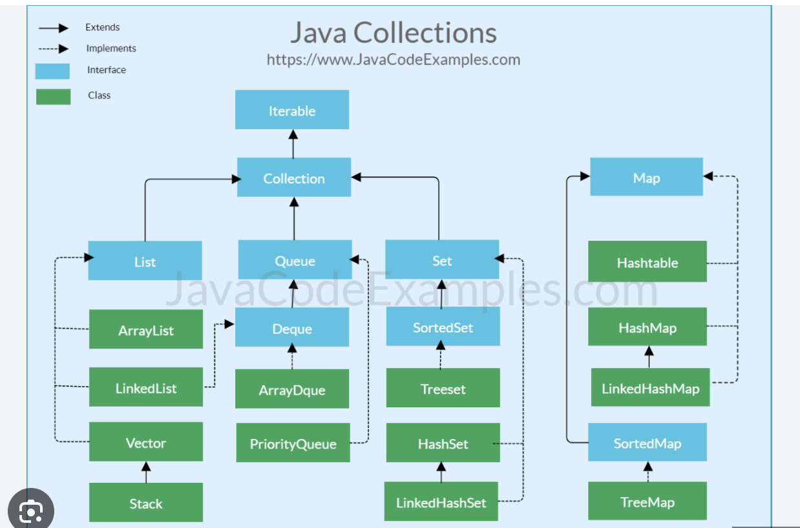
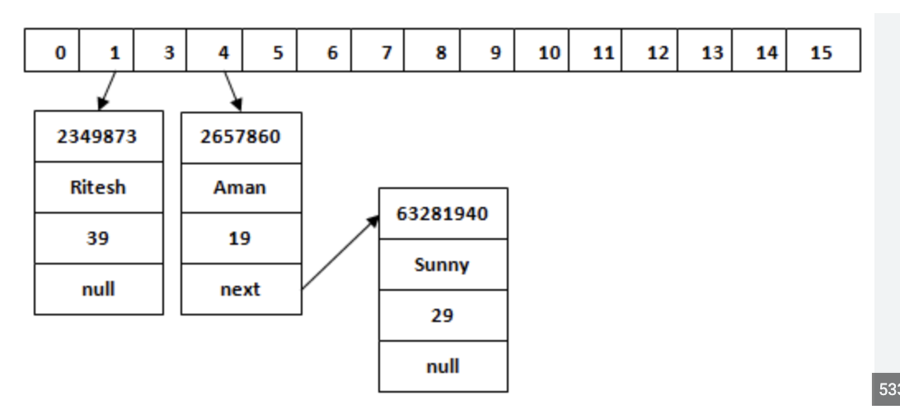

Collection Framework
Collection is an interface in java and Collection Framework is a complete framework, set of interfaces, classes and varous utility methods
Collection is basically a group of objects
just like Array is a group of homogenous data types, collection is group of objects
similarly Collection is a group of object, can be homogeneous or hetrogeneous
Collections class is part of collection framework and a utility class which provide several methods
All of the Collection classes have tostring overridden to return the content.
so collection printing with give [element1, element2, ...]
all collections implement serializable and cloneable
|
Collection hierarchy

|
Collection interface methods which are available in all implementing classes
few methods are defined inside collection interface which are applicable thrugh out the hierarchy
add(Object o) to add an object to any collection
add(Collection c) to add a complete colelction to any collection
contains() contains a object or a collection // return true if the given object is found in collection
isEmpty() // return true if collection does not contains any object
remove(object ) to remove a object // return the object if removed, else return false
remove(collection) to remove a collection , remove the collection if removed, else return false
toArray() // change collection to array of object
size() // return the no of object the collection has
|
List: List are collection in which insertion order is preserved and duplicates are allowed
List interface implementing classes are
ArrayList: arraylist are internally array of object only which are growable
ArrayList are used when retrieval is the main this as retrieval is fast for any element
while insertion is slow, as when any element we want to insert, all elements after that will be shifted
LinkedList linked list are internally double linked list having node, each node contains address of previous and next node
each node contain value
Linked list are worst on retrieval as retreival is done from the start to end
Linked list are best at insertion, as only two nodes address to be changed when elements to be inserted in between
Vector and its child class stack are also List type collection
|
List common methods
all collection methods are available inside list along with its own methods:
add(index, object) // add object at any index
object get(index) // get object at an index
int indexOf(object) // get index of an object, it returns first object index
int lastIndexOf(object) // get last index of object
|
Arraylist in detail:
insertion order is preserved, duplicates are allowed, insertion is slow and worst, retrieval is very fast
Use Arraylist when you have a lot of retrival operations and less insertion operation
ArrayList Constructors
ArrayList al = new ArrayList(); // default capacity is 0 untill first element is added
ArrayList<Integer> al1 = new ArrayList<Integer>();
ArrayList<Integer> al2 = new ArrayList<>();
ArrayList<Integer> al3 = new ArrayList();
ArrayList<Integer> al4 = new ArrayList(100); // capacity 100
ArrayList<Integer> al5 = new ArrayList(al);
arraylist capacity increased when current one is full, increased to- (currentcapacity*3/2)+1
ArrayList and vector only are the two which implements RandomAccess to access any element, so any element can be accessed fast in same time
retriving first element will take same time as retriving 1000th element in array list as they implement random access
ArrayList li1 = new ArrayList(20);
System.out.println( li1 instanceof Serializable); //true
System.out.println( li1 instanceof Cloneable); // true
System.out.println( li1 instanceof RandomAccess); // true
|
Arraylist methods:
ArrayList al = new ArrayList(); // default capacity is 0 untill first element is added
ArrayList al1 = new ArrayList();
al.add(10); // add object
al.add("abc"); // ad object
al.add(1, 10); // add element at an index
al.add(al1); // added a collection
al.add(null); // add object
al.add(null); // add object
al.remove(10); // remove object at index and return object, return false otherwise
al.remove("abc"); // remove the object, return true if removed, else false
al.removeAll(al1); // remove a collection, return true if found and removed
al.size(); // get size, collection method
al.isEmpty(); // true if empty, collection method
al.ensureCapacity(100); // ensure that al will have atleast given capacity
al.get(10); // return element from an index
al.indexOf(10); // return index of the passed object, if not exist, return false
al.clear(); // remove all elements
|
Arraylist with generic
ArrayList al1<Integer> = new ArrayList();
al.add(10); // add object valid
al.add("abc"); // ad object invalid and will give compile time error, as arraylist now is homogeneous and can hold only Integer values
we have made arraylsit typesafe here using generic
|
Linkedlist in detail:
insertion order is preserved, duplicates are allowed, insertion is fast, retrieval is always done from start of list to end
so in finding first element time is 1 sec, finding 100th element will take 100 sec
retrival is worst in linked list
Use LinkedList when you have a lot of insertion operations and less retrival operation
LinkedList Constructors
ArrayList al = new ArrayList();
LinkedList ll = new LinkedList();
LinkedList<Integer> ll1 = new LinkedList<Integer>();
LinkedList<Integer> ll2 = new LinkedList<>();
LinkedList<Integer> ll3 = new LinkedList();
LinkedList<Integer> ll4 = new LinkedList();
LinkedList<Integer> ll5 = new LinkedList(al);
LinkedList li1 = new LinkedList();
System.out.println( li1 instanceof Serializable); //true
System.out.println( li1 instanceof Cloneable); // true
System.out.println( li1 instanceof RandomAccess); // false
|
Linkedlist methods:
SPECIFIC LINKED LIST METHODS ARE:
addfirst, addlast, getfirst, getlast, removefirst, removelast
LinkedList l = new LinkedList(al);
ll.addFirst(10);
ll.addLast(20);
ll.getFirst();
ll.getLast();
ll.removeFirst();
ll.removeLast();
Other common methods from collection, list
LinkedList ll = new LinkedList();
LinkedList ll1 = new LinkedList();
ll.add(10); // add object
ll.add("abc"); // ad object
ll.add(1, 10); // add element at an index
ll.add(al1); // added a collection
ll.add(null); // add object
ll.add(null); // add object
ll.remove(10); // remove object at index and return object, return false otherwise
ll.remove("abc"); // remove the object, return true if removed, else false
ll.removeAll(al1); // remove a collection, return true if found and removed
ll.size(); // get size, collection method
ll.isEmpty(); // true if empty, collection method
ll.get(10); // return element from an index
ll.indexOf(10); // return index of the passed object, if not exist, return false
ll.clear(); // remove all elements
|
Linkedlist with generic
LinkedList al1<Integer> = new LinkedList();
al.add(10); // add object valid
al.add("abc"); // ad object invalid and will give compile time error, as linkedlist now is homogeneous and can hold only Integer values
we have made arraylsit typesafe here using generic
|
Set:
Set does not allow duplicates and insertion order is not preserved, means when you insert them, they are not
inserted in the same order
Set is implemented by classes HashSet and TreeSet
underlying data structure is hashtable
duplicates are not allowed
insertion order is not preserved
|
HashSet: implements Set interface
underlying structure is hashtable
HashSet can be hetrogeneous
HashSet set1 = new HashSet();
// initial capacity is 16
FillRatio/Load Factor:
0.75 that means if hashset is filled 75%, a new hashset object is created with bigger capacity
in arraylist new object is created when old one is completelty full and a new insertion comes.
in HashSet, new one will be created when its 75% full
HashSet set2 = new HashSet(100);
// with 100 capacity and defailt load factor 75%
HashSet set3 = new HashSet(100, 0.99F);
// create hashset object with capacity as 100 and load factor as 99%
// means new object will be created when old one is 99% filled
ArrayList al = new ArrayList();
al.add(10);
HashSet set4 = new HashSet(al);
set4.add(20);
System.out.println(set4.add(20));
set4.add(30);
set4.add("hello");
set4.add(true);
set4.add(null);
set4.add(20); // now 20 is already there in set, so duplicates are not allowed
// so it will return false and will not add element again
// since insertion order is not preserved, output will not give elements in order
System.out.println(set4);
// it willl not be same order as added like [10, 20, 30, hello, true, null]
// can be [null, 20, 10, hello, 30, true]
|
TreeSet: implements Set interface
TreeSet can not be hetrogeneous because the objects are stored in some sorting order and not in order in which we add
since it is sorted, so object used must implement comparable interface as on inserting, a compare is required
TreeSet set1 = new TreeSet();
// sorted set
SortedSet sortedSet = new TreeSet();
// in normal set we can say that this is first element, this is second element
// in sorted set they will be added in sorted order only
sortedSet.add(10);
sortedSet.add(5);
sortedSet.add(15);
System.out.println( sortedSet.add("ten")); // will give exception as sorted set can not have hetrogeneous elements
sortedSet.add(4);
sortedSet.add(20);
// duplicate not allowed
System.out.println( sortedSet.add(20));
// data will be stored any printed in sorted order as we used sorted sets
System.out.println(sortedSet); // [4,5,10,15,20]
System.out.println(sortedSet.first()); // first element //4
System.out.println(sortedSet.last()); // last element //20
System.out.println(sortedSet.headSet(10)); // elements less than 10, fetch from set // [4,5]
System.out.println(sortedSet.tailSet(10)); // elements greater than equal to 10 // [10, 15, 20]
System.out.println(sortedSet.subSet(10,20)); // greater than equal to 10 less than 20 // [10, 15]
null is not allowed
SortedSet s1 = new TreeSet();
s1.add(null); // run time ecxception, since treeset is sorted, each element when added is compared with other objects
// hence it will return NullPointerException
|
Map
// Map, map basically strores object in key value pair which are called entries
// so Map is basically group of entries
// Map is further implemented by classes HashMap, TreeMap and LinkedHashMap
// Map internally uses array list and linkedlist
// Map node has following this:
// key, value, next element reference which has the same index
// In map based on key a hashcode is calculated and then it is stored in array index
each keyvalue pair is known as entry

|
HashMap
It is implemented by an array of linked lists.
values are stored as key pair, duplicate keys are allowed
initial capacity is 16 and load factor is -.75
A HashMap contains values based on the key.
It contains only unique elements.
It may have one null key and multiple null values.
It maintains no order.
// hetrogeneous
Hashmap is hetrogenous for key and value both
HashMap map = new HashMap();
map.put(null, 1);
map.put(1, null);
map.put(2, null);
map.put("three", true);
map.get(1); // get value for any key
System.out.println(map);
HashMap<Integer, String>map = new HashMap<>();
map.put(10, "a");
map.put(11, "b");
map.put(2, "c");
System.out.println(map);
// no insertion order so output is not in any order
// [2=c, 10=a, 11=b]
Map<Integer, String> mapH = new HashMap();
mapH.put(1, "devendra");
mapH.put(2, "devendra");
mapH.put(1, "singh"); // key can not be duplicate, so value for key 1 is replaced
System.out.println(mapH);
mapH.remove(1); // remove object from key, return the object removed or false if not found
mapH.remove(1, "devendra"); // true if removed
mapH.isEmpty(); // return true if empty
mapH.size(); // get the size of map
System.out.println( "size " + mapH.size());
mapH.clear(); // remove all elements from map
mapH.put(1, "devendra");
mapH.put(2, "hello");
System.out.println( "size " + mapH.size());
Set s = mapH.entrySet(); // give the set view of entries of map
Iterator itr = s.iterator(); // get the iterator for set
while(itr.hasNext()) {
System.out.println("hello");
System.out.println(itr.next());
}
// we can also iterator over map using Entry property of Map class
for (Map.Entry e : mapH.entrySet()) {
System.out.println(e.getKey());
System.out.println(e.getValue());
}
|
TreeMap
Treemap store value same as hashmap but in sorting order of keys by default
treemap is homogenous for both key and value, it can not store null key but can store multiple null values
since it is sorted based on key, so key must implement comparable interface
TreeMap is implemented by a Red-Black Tree.
Map<Integer, String> mapT = new TreeMap();
mapT.put(3, "singh");
mapT.put(2, "devendra");
mapT.put(1, "manish");
// since its a sorted map, insertion order is in some sorting mechanism
// here it is inserted based on sorting of key by default
System.out.println(mapT); // [1=manish, 2=devendra, 3=singh] as it is sorted in natural order
mapT.remove(1); // remove object from key, return the object removed or false if not found
mapT.remove(1, "devendra"); // true if removed
mapT.isEmpty(); // return true if empty
mapT.size(); // get the size of map
System.out.println( "size " + mapT.size());
mapT.clear(); // remove all elements from map
mapT.put(1, "devendra");
mapT.put(2, "hello");
mapT.get(1); // get value for any key
mapT.containsKey(1);
mapT.containsValue("as");
System.out.println( "size " + mapT.size());
Set s = mapT.entrySet(); // give the set view of entries of map
Iterator itr = s.iterator(); // get the iterator for set
while(itr.hasNext()) {
System.out.println("hello");
System.out.println(itr.next());
}
// we can also iterator over map using Entry property of Map class
for (Map.Entry e : mapT.entrySet()) {
System.out.println(e.getKey());
System.out.println(e.getValue());
}
mapT.put(2, "devendra");
System.out.println(mapT);
mapT.put(1, null); // null are allowed in value
mapT.put(2, null);
System.out.println(mapT);
mapT.put(null, "As"); // exception for using null as a key
|
LinkedHashMap
// LinkedHashMap underlying structure is double linked lists
// LinkedHashMap store data in order in which they are inserted
// no sorting, duplicate values are allowed
// hetrogeneous
LinkedHashMap hmp = new LinkedHashMap();
LinkedHashMap hmp = new LinkedHashMap(20);
LinkedHashMap hmp = new LinkedHashMap(20, 0.99F);
hmp.put(1, "abd");
hmp.put(15, "deb");
hmp.put(2, "as");
System.out.println(hmp);
// {1=abd, 15=deb, 2=as} order is same as insertion order
Set s = hmp.keySet(); // give a set of all keys of map
Iterator itr = s.iterator();
while (itr.hasNext()){
System.out.println(itr.next());
}
hmp.remove(1); // remove they entry
hmp.containsKey(1);// returns true if given key is contains in map
hmp.containsValue("as"); // returns true if given value is contains in map
hmp.entrySet(); // return a set representation of entries of map
hmp.get(1); // get value for any key
hmp.replace(1, "asd"); // replace value of key with given value
|
Iterator vs ListIterator
Iterator is applicable to all collections while ListIterator is only for List type of collection
Iterator can traverse only in forward direction and can not access the index
ListIterator can traverse in both forward and backward directly and can access index
ListIterator
List list = new LinkedList();
list.add(1);
list.add(2);
ListIterator itr = list.listIterator();
// hasNext() will return true if list has more element when traversing forward
while(itr.hasNext()) {
// nextIndex() return the element index which will be returned by next(), will return list size if last element
// since next will be the 0th element at first so index with return 0 at first
System.out.println(itr.nextIndex());
// next() return the next element in the list and move curser to one forward
System.out.println(itr.next());
}
// output will be 1 2 for itr.next()
// hasPrevious() return true when traversing the list in reverse order
while (itr.hasPrevious()) {
// previous() return the previous element in the list, and move curser to one backward
System.out.println(itr.previous());
// previousIndex() return the index of previous element, -1 if first element
System.out.println(itr.previousIndex());
}
// output will be 2 1 for itr.previous()
|
Iterator
List list = new LinkedList();
list.add(1);
list.add(2);
// using Iterator instead of ListIterator
Iterator itr = list.iterator();
// hasNext() will return true if list has more element when traversing forward
// Iterator does not have index or previous methods
// Iterator traverse in foroward direction only
while(itr.hasNext()) {
// return the next element in the iteration
// throws nosuchelement if no next element
System.out.println(itr.next());
}
|